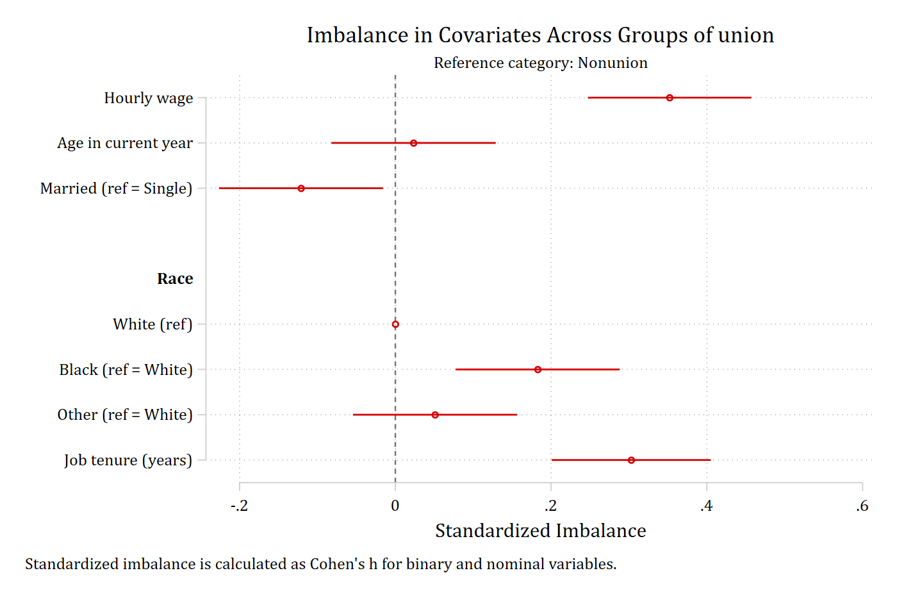
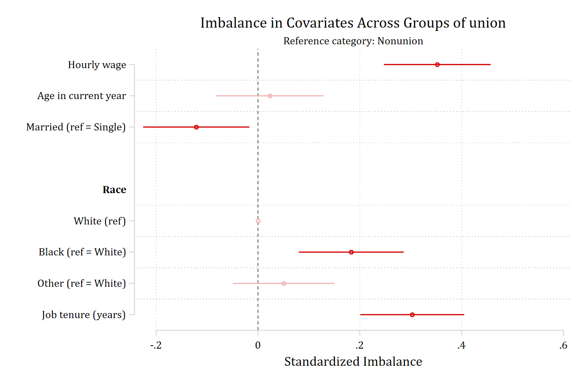
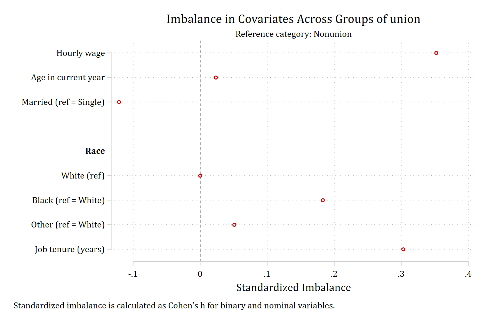
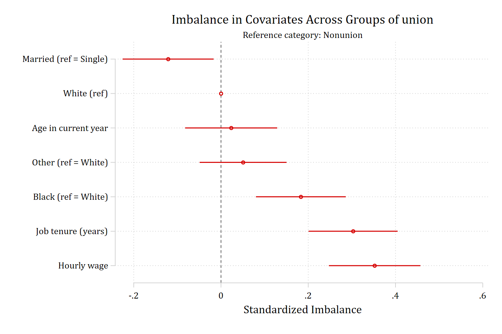
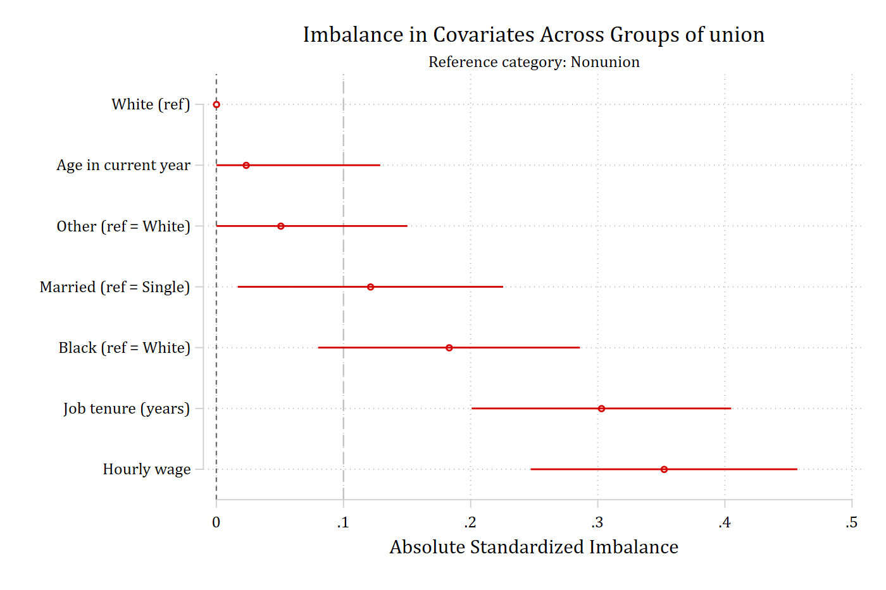
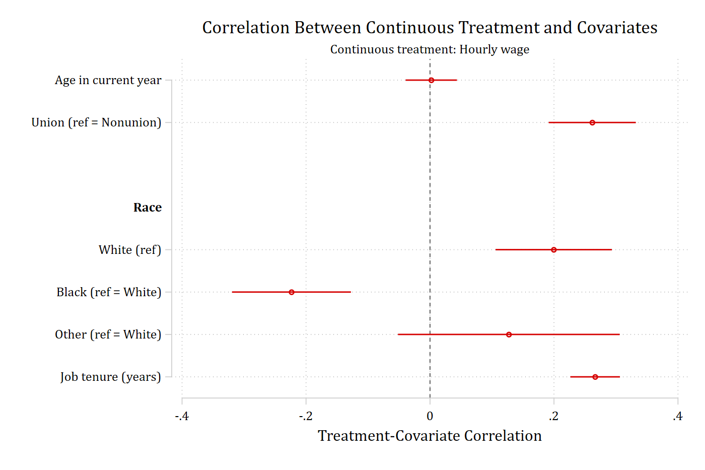
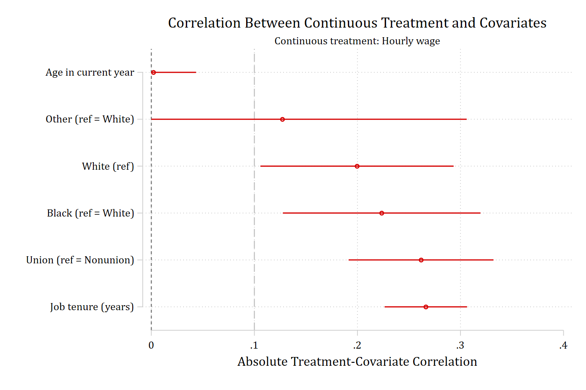
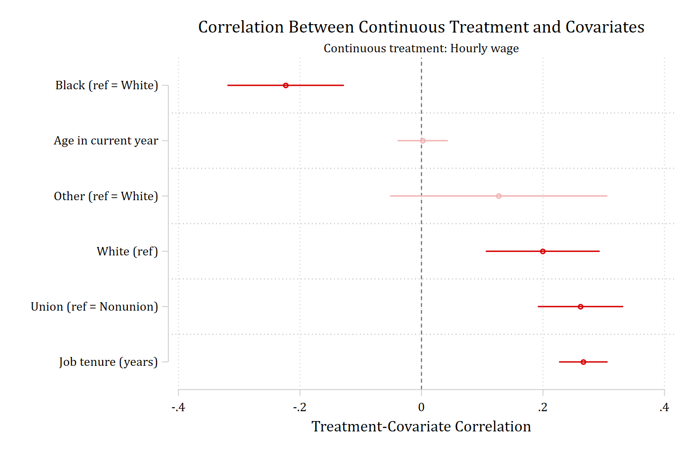
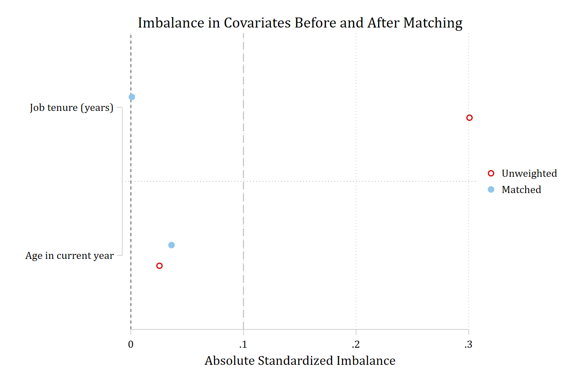

Examples from the help file
The examples in help balanceplot, run in full
These are the examples at the end of help balanceplot, run in order with their printed output and the graph each one draws. Each example adds one option to the one before it; the sentence above each call says what the new option does. The Options, Continuous treatments, and Matching and teffects pages explain the options in more detail. The session starts with estimates clear so that the store() examples, which do not use replace, have nothing to collide with.
Comparing groups
The default: group(union) compares union with nonunion workers on every covariate, as standardized mean differences with 95% confidence intervals.
estimates clear
sysuse nlsw88, clear(NLSW, 1988 extract)balanceplot wage age i.married i.race tenure, group(union)NOTE: 10 observations were excluded due to missing data on
at least one covariate, group(), or outcome() variable.
Base category = 0_Nonunion
Base selected by the 0/1 two-group default.
N used in balance calculations
- N for union = 0_Nonunion: 1408
- N for union = 1_Union: 460graph export "fig/helpex-default.png", replace width(1400)file fig/helpex-default.png saved as PNG format
cohensh reports the binary and nominal covariates (married, race) as Cohen’s h instead of standardized mean differences; continuous covariates are unchanged.
balanceplot wage age i.married i.race tenure, group(union) cohenshNOTE: 10 observations were excluded due to missing data on
at least one covariate, group(), or outcome() variable.
Base category = 0_Nonunion
Base selected by the 0/1 two-group default.
N used in balance calculations
- N for union = 0_Nonunion: 1408
- N for union = 1_Union: 460graph export "fig/helpex-cohensh.png", replace width(1400)file fig/helpex-cohensh.png saved as PNG format
fadens fades the point estimates and intervals that are not statistically significant, so the imbalances that matter stand out.
balanceplot wage age i.married i.race tenure, group(union) fadensNOTE: 10 observations were excluded due to missing data on
at least one covariate, group(), or outcome() variable.
Base category = 0_Nonunion
Base selected by the 0/1 two-group default.
N used in balance calculations
- N for union = 0_Nonunion: 1408
- N for union = 1_Union: 460graph export "fig/helpex-fadens.png", replace width(1400)file fig/helpex-fadens.png saved as PNG format
noci drops the confidence intervals from the graph (they stay in the returned matrices and tables); cohensH is a synonym for cohensh.
balanceplot wage age i.married i.race tenure, group(union) cohensH nociNOTE: 10 observations were excluded due to missing data on
at least one covariate, group(), or outcome() variable.
Base category = 0_Nonunion
Base selected by the 0/1 two-group default.
N used in balance calculations
- N for union = 0_Nonunion: 1408
- N for union = 1_Union: 460graph export "fig/helpex-cohensh-noci.png", replace width(1400)file fig/helpex-cohensh-noci.png saved as PNG format
sort orders the covariates from the most negative to the most positive imbalance instead of the order of the varlist; the variable headings are dropped because the categories of a nominal variable need no longer sit together.
balanceplot wage age i.married i.race tenure, group(union) sortNOTE: 10 observations were excluded due to missing data on
at least one covariate, group(), or outcome() variable.
Base category = 0_Nonunion
Base selected by the 0/1 two-group default.
N used in balance calculations
- N for union = 0_Nonunion: 1408
- N for union = 1_Union: 460graph export "fig/helpex-sort.png", replace width(1400)file fig/helpex-sort.png saved as PNG format
absolute plots the magnitude of each imbalance (so sort now runs from the smallest to the largest), and threshold(.1) adds a dashed reference line at 0.1, a common cutoff for acceptable balance.
balanceplot wage age i.married i.race tenure, group(union) absolute sort threshold(.1)NOTE: 10 observations were excluded due to missing data on
at least one covariate, group(), or outcome() variable.
Base category = 0_Nonunion
Base selected by the 0/1 two-group default.
N used in balance calculations
- N for union = 0_Nonunion: 1408
- N for union = 1_Union: 460graph export "fig/helpex-absolute-sort.png", replace width(1400)file fig/helpex-absolute-sort.png saved as PNG format
threshold(.1) on the signed plot draws the reference lines at both -0.1 and 0.1.
balanceplot wage age i.married i.race tenure, group(union) threshold(.1)NOTE: 10 observations were excluded due to missing data on
at least one covariate, group(), or outcome() variable.
Base category = 0_Nonunion
Base selected by the 0/1 two-group default.
N used in balance calculations
- N for union = 0_Nonunion: 1408
- N for union = 1_Union: 460graph export "fig/helpex-threshold.png", replace width(1400)file fig/helpex-threshold.png saved as PNG format
Tables
table prints a compact table – the two group means, the standardized imbalance, and its p-value – alongside the graph, which is the default one shown above. The same numbers are returned in r(table1) whether or not a table is printed.
balanceplot wage age i.married i.race tenure, group(union) tableNOTE: 10 observations were excluded due to missing data on
at least one covariate, group(), or outcome() variable.
Base category = 0_Nonunion
Base selected by the 0/1 two-group default.
N used in balance calculations
- N for union = 0_Nonunion: 1408
- N for union = 1_Union: 460
Balance results: Nonunion (N=1,408) vs Union (N=460)
| union=0 | union=1 | Standard~d | _
Covariate | Mean | Mean | Imbalance | p-value
-------------------------+------------+------------+------------+-----------
| | | |
Hourly wage | 7.227 | 8.685 | 0.352 | 0.000
Age in current year | 39.205 | 39.276 | 0.023 | 0.664
Married (ref = Single) | 0.665 | 0.607 | -0.121 | 0.023
-------------------------+------------+------------+------------+-----------
Race | | | |
White(ref) | 0.743 | 0.654 | 0.000 | 1.000
Black (ref = White) | 0.246 | 0.328 | 0.183 | 0.001
Other (ref = White) | 0.011 | 0.017 | 0.051 | 0.319
-------------------------+------------+------------+------------+-----------
| | | |
Job tenure (years) | 6.141 | 7.888 | 0.303 | 0.000 matrix list r(table1)r(table1)[7,4]
mean_g0 mean_g1 std_imbala~e p_value
wage 7.2269385 8.6845396 .35213133 5.918e-11
age 39.205256 39.276087 .0233567 .66430587
1.married .66477273 .60652174 -.12117473 .02291971
1b.race .74289773 .65434783 0 1
2.race .24573864 .32826087 .18305107 .00050025
3.race .01136364 .0173913 .05061108 .3192061
tenure 6.1407434 7.8882246 .3028704 6.944e-09tablefull prints the detailed table, adding the standard error and the confidence limits; the matrix version is r(tablefull1).
balanceplot wage age i.married i.race tenure, group(union) tablefullNOTE: 10 observations were excluded due to missing data on
at least one covariate, group(), or outcome() variable.
Base category = 0_Nonunion
Base selected by the 0/1 two-group default.
N used in balance calculations
- N for union = 0_Nonunion: 1408
- N for union = 1_Union: 460
Balance results: Nonunion (N=1,408) vs Union (N=460)
| union=0 | union=1 | Standard~d | _
Covariate | Mean | Mean | Imbalance | SE
-------------------------+------------+------------+------------+------------
| | | |
Hourly wage | 7.227 | 8.685 | 0.352 | 0.053
Age in current year | 39.205 | 39.276 | 0.023 | 0.054
Married (ref = Single) | 0.665 | 0.607 | -0.121 | 0.053
-------------------------+------------+------------+------------+------------
Race | | | |
White(ref) | 0.743 | 0.654 | 0.000 | 0.000
Black (ref = White) | 0.246 | 0.328 | 0.183 | 0.052
Other (ref = White) | 0.011 | 0.017 | 0.051 | 0.051
-------------------------+------------+------------+------------+------------
| | | |
Job tenure (years) | 6.141 | 7.888 | 0.303 | 0.052
| 95% CI | _
Covariate | Lower Upper | p-value
-------------------------+------------------------+-----------
| |
Hourly wage | 0.247 0.457 | 0.000
Age in current year | -0.082 0.129 | 0.664
Married (ref = Single) | -0.226 -0.017 | 0.023
-------------------------+------------------------+-----------
Race | |
White(ref) | 0.000 0.000 | 1.000
Black (ref = White) | 0.080 0.286 | 0.001
Other (ref = White) | -0.049 0.150 | 0.319
-------------------------+------------------------+-----------
| |
Job tenure (years) | 0.201 0.405 | 0.000 matrix list r(tablefull1)r(tablefull1)[7,7]
mean_g0 mean_g1 std_imbala~e std_err ci_low ci_high
wage 7.2269385 8.6845396 .35213133 .0534793 .2472458 .45701686
age 39.205256 39.276087 .0233567 .0538117 -.08218074 .12889415
1.married .66477273 .60652174 -.12117473 .05322493 -.22556139 -.01678808
1b.race .74289773 .65434783 0 0 0 0
2.race .24573864 .32826087 .18305107 .05249912 .08008791 .28601423
3.race .01136364 .0173913 .05061108 .05079615 -.04901217 .15023433
tenure 6.1407434 7.8882246 .3028704 .05204687 .2007942 .4049466
p_value
wage 5.918e-11
age .66430587
1.married .02291971
1b.race 1
2.race .00050025
3.race .3192061
tenure 6.944e-09labwidth(30) widens the label column so that long variable and category labels are not abbreviated, and width(11) widens every statistic column.
balanceplot wage age i.married i.race tenure, group(union) table labwidth(30) width(11)NOTE: 10 observations were excluded due to missing data on
at least one covariate, group(), or outcome() variable.
Base category = 0_Nonunion
Base selected by the 0/1 two-group default.
N used in balance calculations
- N for union = 0_Nonunion: 1408
- N for union = 1_Union: 460
Balance results: Nonunion (N=1,408) vs Union (N=460)
| union=0 | union=1 | Standardi~d | _
Covariate | Mean | Mean | Imbalance | p-value
-------------------------------+-------------+-------------+-------------+------------
| | | |
Hourly wage | 7.227 | 8.685 | 0.352 | 0.000
Age in current year | 39.205 | 39.276 | 0.023 | 0.664
Married (ref = Single) | 0.665 | 0.607 | -0.121 | 0.023
-------------------------------+-------------+-------------+-------------+------------
Race | | | |
White(ref) | 0.743 | 0.654 | 0.000 | 1.000
Black (ref = White) | 0.246 | 0.328 | 0.183 | 0.001
Other (ref = White) | 0.011 | 0.017 | 0.051 | 0.319
-------------------------------+-------------+-------------+-------------+------------
| | | |
Job tenure (years) | 6.141 | 7.888 | 0.303 | 0.000 More than two groups
A grouping variable with three categories gives one comparison per nonbase category, each in its own color; the base is the largest complete-case category (White) unless base() says otherwise.
balanceplot wage age i.married tenure, group(race)NOTE: 15 observations were excluded due to missing data on
at least one covariate, group(), or outcome() variable.
Base category = 1_White
Base selected as the largest complete-case group.
N used in balance calculations
- N for race = 1_White: 1627
- N for race = 2_Black: 578
- N for race = 3_Other: 26graph export "fig/helpex-groups.png", replace width(1400)file fig/helpex-groups.png saved as PNG format
Store results for esttab
store(bp) posts the group means and the imbalances as estimation results (bp_mean_g0, bp_mean_g1, bp_imbalance) so that esttab can lay them out as three aligned columns; the graph is the default one.
balanceplot wage age i.married i.race tenure, group(union) store(bp)NOTE: 10 observations were excluded due to missing data on
at least one covariate, group(), or outcome() variable.
Base category = 0_Nonunion
Base selected by the 0/1 two-group default.
N used in balance calculations
- N for union = 0_Nonunion: 1408
- N for union = 1_Union: 460esttab bp_mean_g0 bp_mean_g1 bp_imbalance, se label mtitles--------------------------------------------------------------------
(1) (2) (3)
bp_mean_g0 bp_mean_g1 bp_imbalance
--------------------------------------------------------------------
Hourly wage 7.227 8.685 0.352***
(0.0535)
Age in current year 39.21 39.28 0.0234
(0.0538)
Married 0.665 0.607 -0.121*
(0.0532)
White 0.743 0.654 0
(.)
Black 0.246 0.328 0.183***
(0.0525)
Other 0.0114 0.0174 0.0506
(0.0508)
Job tenure (years) 6.141 7.888 0.303***
(0.0520)
--------------------------------------------------------------------
Observations 1408 460 1868
--------------------------------------------------------------------
Standard errors in parentheses
* p<0.05, ** p<0.01, *** p<0.001With three groups, store(br) posts one mean result per group and one imbalance result per nonbase comparison (br_imb_g2, br_imb_g3); the graph is the three-group plot above.
balanceplot wage age i.married tenure, group(race) store(br)NOTE: 15 observations were excluded due to missing data on
at least one covariate, group(), or outcome() variable.
Base category = 1_White
Base selected as the largest complete-case group.
N used in balance calculations
- N for race = 1_White: 1627
- N for race = 2_Black: 578
- N for race = 3_Other: 26esttab br_mean_g1 br_mean_g2 br_mean_g3 br_imb_g2 br_imb_g3, se label mtitles----------------------------------------------------------------------------------------------------
(1) (2) (3) (4) (5)
br_mean_g1 br_mean_g2 br_mean_g3 br_imb_g2 br_imb_g3
----------------------------------------------------------------------------------------------------
Hourly wage 8.106 6.876 8.551 -0.222*** 0.0795
(0.0502) (0.210)
Age in current year 39.27 38.81 39.31 -0.150** 0.0124
(0.0488) (0.193)
Married 0.702 0.471 0.692 -0.483*** -0.0207
(0.0474) (0.195)
Job tenure (years) 5.808 6.502 4.949 0.125** -0.161
(0.0481) (0.202)
----------------------------------------------------------------------------------------------------
Observations 1627 578 26 2205 1653
----------------------------------------------------------------------------------------------------
Standard errors in parentheses
* p<0.05, ** p<0.01, *** p<0.001Continuous treatment
contreat(wage) replaces group() with a continuous treatment: each row is the correlation between wages and the covariate, with its confidence interval. The correlations are returned in r(correlation).
balanceplot age i.union i.race tenure, contreat(wage)NOTE: 378 observations were excluded due to missing data on
a covariate, contreat(), or outcome() variable.
Continuous treatment = wage (Hourly wage)
N used in correlation calculations = 1,868graph export "fig/helpex-contreat.png", replace width(1400)file fig/helpex-contreat.png saved as PNG formatmatrix list r(correlation)r(correlation)[6,5]
correlation std_err ci_low ci_high p_value
age .0020476 .02110997 -.03932719 .04342238 .92272904
1.union .26175184 .03586242 .1914628 .33204088 2.904e-13
1b.race .19959395 .04782955 .10584975 .29333815 .00003006
2.race -.22349596 .04891626 -.31937007 -.12762184 4.902e-06
3.race .12716398 .09126594 -.05171398 .30604194 .16351867
tenure .26637895 .02041563 .22636506 .30639284 6.541e-39
threshold(.1) adds reference lines at -0.1 and 0.1 on the correlation scale.
balanceplot age i.union i.race tenure, contreat(wage) threshold(.1)NOTE: 378 observations were excluded due to missing data on
a covariate, contreat(), or outcome() variable.
Continuous treatment = wage (Hourly wage)
N used in correlation calculations = 1,868graph export "fig/helpex-contreat-threshold.png", replace width(1400)file fig/helpex-contreat-threshold.png saved as PNG formatabs (the shortest abbreviation of absolute) plots the magnitude of each correlation, sort orders them from smallest to largest, and only the positive threshold line is drawn.
balanceplot age i.union i.race tenure, contreat(wage) abs sort threshold(.1)NOTE: 378 observations were excluded due to missing data on
a covariate, contreat(), or outcome() variable.
Continuous treatment = wage (Hourly wage)
N used in correlation calculations = 1,868graph export "fig/helpex-contreat-absolute.png", replace width(1400)file fig/helpex-contreat-absolute.png saved as PNG format
fadens fades the correlations that are not significant, sort orders the signed correlations, and tablefull prints the detailed table (correlation, standard error, confidence limits, p-value) as well.
balanceplot age i.union i.race tenure, contreat(wage) fadens sort tablefullNOTE: 378 observations were excluded due to missing data on
a covariate, contreat(), or outcome() variable.
Continuous treatment = wage (Hourly wage)
N used in correlation calculations = 1,868
Treatment-covariate correlations: Hourly wage
| | 95% CI | _
Covariate | Correlat~n SE | Lower Upper | p-value
-------------------------+------------------------+------------------------+-----------
| | |
Age in current year | 0.002 0.021 | -0.039 0.043 | 0.923
Union (ref = Nonunion) | 0.262 0.036 | 0.191 0.332 | 0.000
-------------------------+------------------------+------------------------+-----------
Race | | |
White(ref) | 0.200 0.048 | 0.106 0.293 | 0.000
Black (ref = White) | -0.223 0.049 | -0.319 -0.128 | 0.000
Other (ref = White) | 0.127 0.091 | -0.052 0.306 | 0.164
-------------------------+------------------------+------------------------+-----------
| | |
Job tenure (years) | 0.266 0.020 | 0.226 0.306 | 0.000 graph export "fig/helpex-contreat-fadens.png", replace width(1400)file fig/helpex-contreat-fadens.png saved as PNG format
store(ct) posts the correlations as the estimation result ct_correlation for esttab; the graph is the default contreat() plot above.
balanceplot age i.union i.race tenure, contreat(wage) store(ct)NOTE: 378 observations were excluded due to missing data on
a covariate, contreat(), or outcome() variable.
Continuous treatment = wage (Hourly wage)
N used in correlation calculations = 1,868esttab ct_correlation, se label mtitles------------------------------------
(1)
ct_correla~n
------------------------------------
Age in current year 0.00205
(0.0211)
Union 0.262***
(0.0359)
White 0.200***
(0.0478)
Black -0.223***
(0.0489)
Other 0.127
(0.0913)
Job tenure (years) 0.266***
(0.0204)
------------------------------------
Observations 1868
------------------------------------
Standard errors in parentheses
* p<0.05, ** p<0.01, *** p<0.001Matching-weight examples
After ATT matching with psmatch2, _weight equals 1 for treated observations and records how often or how strongly each matched control contributes; unmatched controls have missing weights. matchweight(_weight) shows the original complete-case balance and the weighted matched balance in the same graph, with one marker symbol for each.
sysuse nlsw88, clear(NLSW, 1988 extract)psmatch2 union age tenure grade, neighbor(1) logitLogistic regression Number of obs = 1,866
LR chi2(3) = 42.83
Prob > chi2 = 0.0000
Log likelihood = -1019.5818 Pseudo R2 = 0.0206
------------------------------------------------------------------------------
union | Coefficient Std. err. z P>|z| [95% conf. interval]
-------------+----------------------------------------------------------------
age | 0.003 0.018 0.164 0.870 -0.032 0.038
tenure | 0.048 0.009 5.208 0.000 0.030 0.067
grade | 0.072 0.022 3.338 0.001 0.030 0.115
_cons | -2.534 0.771 -3.289 0.001 -4.045 -1.024
------------------------------------------------------------------------------balanceplot age tenure grade, group(union) matchweight(_weight)NOTE: 12 observations were excluded due to missing data on
at least one covariate, group(), or outcome() variable.
NOTE: 1060 additional base-group observations were excluded from
weighted calculations due to a zero or missing matchweight().
Base category = 0_Nonunion
Base selected by the 0/1 two-group default.
N used in unweighted balance calculations
- N for union = 0_Nonunion: 1407
- N for union = 1_Union: 459
N used in weighted balance calculations
matchweight(_weight) applies to the base group only; all nonbase groups have weight 1.
- N for union = 0_Nonunion: 347; sum of matching weights = 459
- N for union = 1_Union: 459graph export "fig/helpex-matchweight.png", replace width(1400)(file fig/helpex-matchweight.png not found)
file fig/helpex-matchweight.png saved as PNG format
With matchweight(), store(bm) posts two complete sets of results, the unweighted set with the prefix bm_unw_ and the weighted set with bm_w_, so each can be passed to esttab on its own; the graph is the one above.
balanceplot age tenure grade, group(union) matchweight(_weight) store(bm)NOTE: 12 observations were excluded due to missing data on
at least one covariate, group(), or outcome() variable.
NOTE: 1060 additional base-group observations were excluded from
weighted calculations due to a zero or missing matchweight().
Base category = 0_Nonunion
Base selected by the 0/1 two-group default.
N used in unweighted balance calculations
- N for union = 0_Nonunion: 1407
- N for union = 1_Union: 459
N used in weighted balance calculations
matchweight(_weight) applies to the base group only; all nonbase groups have weight 1.
- N for union = 0_Nonunion: 347; sum of matching weights = 459
- N for union = 1_Union: 459esttab bm_unw_mean_g0 bm_unw_mean_g1 bm_unw_imbalance, se label mtitles--------------------------------------------------------------------
(1) (2) (3)
bm_unw_mea~0 bm_unw_mea~1 bm_unw_imb~e
--------------------------------------------------------------------
Age in current year 39.20 39.28 0.0254
(0.0539)
Job tenure (years) 6.136 7.871 0.301***
(0.0521)
Current grade comp~d 13.04 13.58 0.207***
(0.0521)
--------------------------------------------------------------------
Observations 1407 459 1866
--------------------------------------------------------------------
Standard errors in parentheses
* p<0.05, ** p<0.01, *** p<0.001esttab bm_w_mean_g0 bm_w_mean_g1 bm_w_imbalance, se label mtitles--------------------------------------------------------------------
(1) (2) (3)
bm_w_mean_g0 bm_w_mean_g1 bm_w_imbal~e
--------------------------------------------------------------------
Age in current year 39.39 39.28 -0.0361
(0.0660)
Job tenure (years) 7.865 7.871 0.000878
(0.0660)
Current grade comp~d 13.58 13.58 0
(0.0660)
--------------------------------------------------------------------
Observations 347 459 806
--------------------------------------------------------------------
Standard errors in parentheses
* p<0.05, ** p<0.01, *** p<0.001Official teffects and stteffects estimators provide raw and matched or weighted standardized differences through tebalance summarize; balanceplot, tebalance calls that command and plots the results for every covariate of the treatment model. No confidence intervals are available in this mode because tebalance summarize does not return standard errors.
sysuse nlsw88, clear(NLSW, 1988 extract)teffects psmatch (wage) (union age tenure grade), atetTreatment-effects estimation Number of obs = 1,866
Estimator : propensity-score matching Matches: requested = 1
Outcome model : matching min = 1
Treatment model: logit max = 3
--------------------------------------------------------------------------------------
| AI robust
wage | Coefficient std. err. z P>|z| [95% conf. interval]
---------------------+----------------------------------------------------------------
ATET |
union |
(Union vs Nonunion) | 0.891 0.280 3.180 0.001 0.342 1.439
--------------------------------------------------------------------------------------balanceplot, tebalance
graph export "fig/helpex-tebalance.png", replace width(1400)(file fig/helpex-tebalance.png not found)
file fig/helpex-tebalance.png saved as PNG format
A varlist restricts the tebalance plot to selected covariates, and absolute sort threshold(.1) work as they do in the other modes.
balanceplot age tenure, tebalance absolute sort threshold(.1)
graph export "fig/helpex-tebalance-sorted.png", replace width(1400)(file fig/helpex-tebalance-sorted.png not found)
file fig/helpex-tebalance-sorted.png saved as PNG format